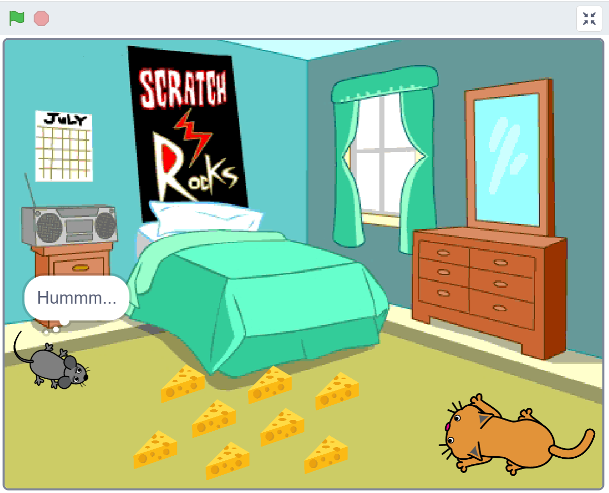

Universidade Estadual do Sudoeste da Bahia
Curso: Licenciatura em Matemática (UESB/PARFOR)
Componente Curricular: Trabalho de Conclusão de Curso I
Docente: Dr. Teles Araújo Fernandes
Discente: Gil Christiano Guedes dos Santos
SEQUÊNCIAS DIDÁTICAS
Tema da sequência didática: Lógica Matemática utilizando a Programação de Jogos Digitais na plataforma Scratch.
Objetivo da sequência didática: Aprendizagem de Lógica Matemática por meio da Programação de Jogos com usos do framework Scratch.
Conteúdos a serem trabalhados: Conceito e construções formais em lógica matemática. Programação estruturada por meio de blocos no framework Scratch.
Habilidades da BNCC a serem desenvolvidas:
Objetivos de aprendizagem: Resolver problema de lógica, contendo dados numéricos e não numéricos. Compreender o enunciado do problema, utilizando o pensamento dedutivo e o raciocínio lógico para chegar à solução. Utilizar e representar estratégias diversas de resolução.
Desenvolver estratégias de representação de um problema não convencional e comparar diferentes soluções para uma mesma situação-problema.
Objetivos específicos
Resolver problema de lógica, contendo dados numéricos e não numéricos.
Estimular o raciocínio lógico, valorizando o pensamento matemático.
Organizar os dados do problema, usando diferentes representações.
Compreender o texto do problema, utilizando pensamento dedutivo e raciocínio lógico para chegar à solução.
Determinar e representar as estratégias necessárias para a resolução de problemas de lógica.
Resolver problemas de lógica com até 4 atributos.
Tempo de execução da sequência didática: 02 ou 03 aulas
Materiais necessários: Quadro, pincéis, apagador, projetor multimídia e computadores (laboratório de informática).
Detalhamento das aulas:
Planejamento para ser aplicado 02 (duas) ou 03 (três) aulas. A modelo pedagógico recomendado é a construtivista (aluno possui liberdade para desenvolver e, o professor age como mediador e orientador) e, a Metodologia Matemática será a Resolução de Problemas.
Organização da turma: 7ª a 9ª Série do Ensino Fundamental II
Introdução: No início apresentam-se os conceitos de Lógica Matemática conforme tabela abaixo e o roteiro subsequente:
Período da aula |
Tópicos abordados |
Tempo programado |
Momento 001 |
Conceitos fundamentais de Lógica Matemática |
Entre 35 a 40 minutos |
Considera-se uma proposição, ou um enunciado, qualquer sentença declarativa que assume um dos dois valores-verdade: verdade e falsidade; ou seja, uma proposição é uma sentença declarativa que pode ser verdadeira (V) ou falsa (F). Essa propriedade da proposição é usualmente denominada valor-verdade. (BISPO, 2012) Exemplos de sentenças declarativas a) seno 270º = -1 (é uma proposição verdadeira (V).) b) Vênus está a 100 quilômetros da Terra (é uma proposição falsa (F).) c) Os suíços fabricam os melhores relógios e os franceses, o melhor vinho. (é uma proposição verdadeira (V), porém , por um certo período de tempo.)
Exemplos de sentenças não declarativas:
a) Volte aqui! (sentença imperativa) b) Não corra tão rápido! (sentença imperativa) c) Pela mãe do profeta! (sentença exclamativa) d) Quantas vezes eu terei de repetir isso? (sentença interrogativa)
Assim, essas sentenças não são proposições, pois é impossível estabelecer um valor-verdade para elas. Nos exemplos anteriores, as proposições tratam os assuntos: a) matemática; b) astronomia; e c) vinhos e relógios.
O Cálculo Proposicional analisa a relação entre as proposições, considerando a forma que essa relação assume e não especificamente o seu conteúdo, ou seu significado. As proposições podem ser substituídas por letras maiúsculas do alfabeto latino: A, B, ... , Z.
Exemplo 01:
a) Os suíços fabricam os melhores relógios e os frances, os melhores vinhos. Se tomarmos:
R = Os suíços fabricam os melhores relógios. S = Os franceses fabricam os melhores vinhos. Teremos: R e S, a tradução simbólica da proposição.
b) Se prestar atenção na aula, então tirarei boa nota na prova. Se tomarmos:
A = Eu prestar atenção na aula. P = Eu tirarei boa nota na prova. Teremos: Se A então P, a tradução simbólica da proposição.
Princípios da lógica clássica
A Lógica Matemática na sua versão clássica assume como regras fundamentais do pensamento válido três princípios básicos.
Princípio da Identidade: “Toda proposição é idêntica a si mesma.” P é P
Princípio da Não Contradição: “Uma proposição não pode ser verdadeira e falsa ao mesmo tempo.” não (P e não P)
Princípio do Terceiro Excluído:
“Toda proposição ou é verdadeira ou é falsa, não existindo um terceiro valor que ela possa assumir.” P ou não P (ou exclusivo)
Proposição simples e composta
Uma proposição é simples se, e somente se, contiver uma única afirmação. Uma proposição é composta quando for constituída por uma sequência finita de pelo menos duas proposições simples. Nos exemplos anteriores de sentenças declarativas, a e b são proposições simples, e c é uma proposição composta.
Conectivos proposicionais
Na linguagem comum, usam-se palavras explícitas ou não para interligar frases dotadas de algum sentido. Tais palavras são substituídas, na Lógica Matemática, por símbolos denominados conectivos lógicos. Em nosso estudo, nos restringiremos inicialmente ao chamado cálculo proposicional; por essa razão, os conectivos utilizados são conhecidos por sentenciais ou proposicionais.
Trabalharemos com cinco conectivos que substituirão simbolicamente as expressões:
Exemplo 02
a) Somos pobres mortais e fanáticos torcedores da vida. É uma proposição composta:
Somos pobres mortais, a primeira proposição, e somos fanáticos torcedores da vida, a segunda proposição, sendo e a palavra de ligação.
b) Se não nos alimentarmos, morreremos. É uma proposição composta:
não nos alimentarmos, a primeira proposição, e (nós) morreremos, a segunda.
As palavras que unem essas proposições são Se .............., então, ...............
c) Vamos ao cinema ou ao teatro. É uma proposição composta:
Vamos ao cinema, a primeira proposição, e (vamos) ao teatro, a segunda proposição, sendo ou a palavra de ligação.
Os símbolos especiais da Lógica Matemática expõem com maior clareza as estruturas lógicas de proposições e argumentos, que muitas vezes, na linguagem comum, ficam obscurecidas. A Lógica Matemática trata da relação entre proposições, considerando a forma que essa relação assume e não o seu conteúdo. Em função disso, as proposições são representadas por letras maiúsculas do alfabeto latino. Cada letra maiúscula é usada para representar uma proposição bem definida (uma constante) e cada minúscula para representar uma proposição qualquer (uma variável). É importante assinalar que a Lógica Matemática é uma ciência não empírica, isto é, não depende de observações como nas ciências naturais. Portanto, tem afinidades com a Matemática e dela se aproxima.
Classificação dos conectivos
Apresentaremos a seguir os conectivos que, com suas representações simbólicas, serão usados na tradução de proposições para a linguagem simbólica.
Conjunção
É o resultado da combinação de duas proposições ligadas pela palavra e, que será substituída pelo símbolo ∧. Cada proposição também será traduzida, utilizando-se a primeira letra de sua palavra-chave. A conjunção pode também ser expressa por palavras como: mas, todavia, contudo, no entanto, visto que, enquanto, além disso, embora.
Exemplo 03
a) Maria foi ao cinema e Marta, ao teatro.
Tradução: C = Maria foi ao cinema. T = Marta foi ao teatro. Simbolicamente, temos: C ∧ T.
b) José é jogador de futebol do Flamengo e Leandro seguiu a carreira de Medicina.
Tradução: F = José é jogador de futebol do Flamengo. M = Leandro seguiu a carreira de Medicina. Simbolicamente, temos: F ∧ M.
c) André foi ao baile, mas Maria ficou em casa.
Tradução: B = André foi ao baile. C = Maria ficou em casa. Simbolicamente, temos: B ∧ C.
Disjunção
É o resultado da combinação de duas proposições ligadas pela palavra ou, que será substituída pelo símbolo ∨. Cada proposição também será traduzida, utilizando-se a primeira letra de sua palavra-chave. Na linguagem coloquial, a palavra ou pode ser empregada em dois sentidos, inclusivo ou exclusivo.
Tomando-se as seguintes proposições: A = Paulo é matemático ou físico. B = João é paulistano ou gaúcho.
Em A, pode ocorrer de Paulo ser matemático e físico, trata-se do ou inclusivo. Em B, não é possível que João seja paulistano e gaúcho ao mesmo tempo, trata-se do ou exclusivo. No cálculo proposicional, somente o ou inclusivo será abordado.
Exemplo 04
a) Maria foi ao cinema ou ao teatro.
Tradução: C = Maria foi ao cinema. T = Maria foi ao teatro. Simbolicamente, temos: C ∨ T.
b) José será jogador de futebol ou seguirá a carreira de Medicina. Tradução:
F = José será jogador de futebol. M = José seguirá a carreira de Medicina. Simbolicamente, temos: F ∨ M.
Condicional
Duas proposições formam uma condicional quando for possível colocá-las na seguinte forma:
Exemplo 05
a) Se Alberto é poliglota, então fala várias línguas. Aqui, a consequente depende da definição da palavra poliglota.
Tradução: P = Alberto é poliglota. L = (Alberto) fala várias línguas. Simbolicamente, temos: P → L.
b) Se colocarmos em um ácido papel de tornassol, o papel ficará vermelho. A consequente decorre da atuação química e física da antecedente.
Tradução: C = Colocarmos em um ácido papel de tornassol. V = O papel ficará vermelho. Simbolicamente, temos: C → V.
c) Se Fernando é inteligente, eu sou um gênio. Não existe uma conexão real entre a antecedente e a consequente.
Tradução: F = Fernando é inteligente. E = eu sou um gênio. Simbolicamente, temos: F → E.
d) Se o Brasil for campeão, eu vou para o Japão. A consequente reflete uma vontade própria, que depende da antecedente.
Tradução: B = O Brasil for campeão. J = Eu vou para o Japão. Simbolicamente, temos: B → J.
e) Se todos os homens são mortais e Sócrates é um homem, então Sócrates é mortal. Nesse caso, a consequente depende logicamente da antecedente.
Tradução: H = Todos os homens são mortais. S = Sócrates é um homem. M = Sócrates é mortal. Simbolicamente, temos: (H ∧ S) → M.
Bicondicional
Toda proposição composta, formada por duas proposições, que pode ser colocada na forma: (proposição 1) se, e somente se, (proposição 2) é chamada de bicondicional e seu conectivo de ligação é representado pelo símbolo ↔. A proposição bicondicional pode ser entendida como uma conjunção de dois condicionais, ou seja, dado p ↔ q, temos p → q e q → p.
Exemplo 06
a) Só ganharás o dinheiro se completares o trabalho. Tal proposição é equivalente a:
Ganharás o dinheiro se, e somente se, completares o trabalho.
Tradução: D = Ganharás o dinheiro. T = Completares o trabalho. Simbolicamente, temos: D ↔ T.
b) Só haverá diminuição da violência se a educação for prioridade governamental. Tal proposição é equivalente a:
Se houver diminuição da violência, a educação é prioridade governamental. e Se a educação for prioridade governamental, a violência diminuirá.
Tradução:
V = Haverá diminuição da violência. E = A educação é prioridade governamental. Simbolicamente, temos: V ↔ E.
Negação
Este conectivo não liga duas proposições, mas simplesmente nega a afirmação da proposição que o precede. Em virtude disso, é um conectivo unário, enquanto os anteriores são conectivos binários, pois ligam duas proposições. Se o valor-verdade de uma proposição é (V), quando acompanhado do conectivo de negação, passará a ser (F) e vice-versa. O símbolo utilizado para esse conectivo é ¬, colocado antes da letra que traduz a proposição.
Exemplo 07
a) Luís não recebeu o seu pagamento na data prevista.
Tradução: P = Luís recebeu o seu pagamento na data prevista. Simbolicamente, temos: ¬P.
b) Alfredo não gosta de trabalhar.
Tradução: T = Alfredo gosta de trabalhar. Simbolicamente, temos: ¬T.
c) A estabilidade não gera desemprego.
Tradução: E = A estabilidade gera desemprego. Simbolicamente, temos: ¬E.
|
||
Momento 002 |
Exemplos de resoluções de atividades dos livros |
Entre 20 a 25 minutos |
1. Determine se as fórmulas a seguir são wffs. a) A b) (A → B) ∧ C c) B ∧ (C ∨ D)) d) B ∧ C ∨ D e) ¬(A ∨ B) ∨ C → D f) (¬((A ∨ B) ∧ C ↔ ((D ∨ ¬E) → F)) g) ((¬(A ∨ (¬B) ↔ D) ∨ E)
2. Traduza para a linguagem simbólica as seguintes proposições, usando letras maiúsculas para abreviar as proposições simples.
a) Se Alfredo escrever para Maria, ela não irá para outra cidade. b) Ou Alfredo escreve para Maria ou ela irá para outra cidade. c) Alfredo não escreveu para Maria e ela irá para outra cidade. d) Alfredo escreverá para Maria se, e somente se, ela for para outra cidade. e) Se Alfredo escrever para Maria e João for ao encontro dela, então Maria não irá para outra cidade. f) Se Alfredo for ao encontro de Maria ou João for ao encontro de Maria, ela não ficará mais na cidade. g) João só irá ao encontro de Maria se Alfredo não estiver na cidade. h) Se Maria se encontrar com João, ou se não for ao encontro com Alfredo, Maria irá para outra cidade. i) O gerente despedirá Maria ou despedirá João. j) Se João é vizinho de Maria, então João conhece Maria. k) Se João ama Maria e Maria ama Paulo, então João não terá chance com Maria. l) Se João for despedido e procurar um emprego, com certeza ganhará um salário melhor. m) O número de acidentes diminuirá nas estradas se, e somente se, houver mais policiamento e os motoristas forem mais conscientes. n) Todos acertaram todas as questões, mas isso não significa que não devam estudar mais. |
||
Desenvolvimento: Explana-se sobre as funções matemática e de lógica na plataforma Scratch:
Período da aula |
Tópicos abordados |
Tempo programado |
Momento 003 |
Explicando as funcionalidades do framework Scratch |
Entre 20 a 25 minutos |
Scratch: Guia Prático para a aplicação na Educação Básica. Michel Figueiredo de Souza e Christine Sertã Costa.
Disponível no endereço eletrônico: https://drive.google.com/file/d/16c1FvmjdM8TquCA_Vr-kYfhurQCM0I2b/view?usp=sharing
|
||
Momento 04 |
Respondendo algumas atividades como exemplos em Scratch |
Entre 30 a 35 minutos |
Atividades em laboratório: Seguem este roteiro didático – sequência – e conclui-se em três atividades no Momento 04, modelos distintos e referentes aos planejamentos para a aprendizagem de Lógica Matemática com usos da plataforma Scratch:
Construa um pequeno jogo com o gato Scratch inicialmente dormindo, ao centro da tela. Ao redor do Scratch insira seis números de 1 até 6. O jogo consiste em, ao iniciar o jogo clicando na bandeira verde, a sua programação deve escolher de forma randômica um destes seis números para conter o despertador do gato Scratch. Os jogadores, revesando entre si, jogarão um dado não viciado sobre uma mesa. Ganhará o jogo aquela(e) que, após jogar o dado, o número apresentado seja exatamente àquele que, ao clicar no respectivo número na tela, despertará o gato Scratch.
O gato Scratch deve dizer: - Acordei!!!
Passo 1: Seleção randômica de um valor no conjunto fechado de 1 até 6, neste caso: [1; 6]; Passo 2: Associar o movimento do gato Scratch ao evento. Se o jogador clicar no número correto, o gato acordará; e Passo 3: Caso seja outro valor o gato Scratch ficará no modo default – dormindo.
Conteúdo no formato de lógica simbólica:
Q = Selecionado o número não válido; R = Selecionado o número válido; S = O gato Scratch permanece dormindo; T = O gato Scratch acorda; A = Clica em um dos seis números F = Encerra o laço <enquanto S>
<enquanto S> Se A ∧ Q → CONTINUE <enquanto S> Se A ∧ R → T ∧ F
Elabore um jogo para Scratch de maneira que possua: um laço de repetição e três condicionais e, possua no mínimo 03 (três) variáveis representando afirmações lógicas.
Resposta: Jogo de pedra-papel-tesoura ou Jankempô.
Pedra-papel-tesoura também chamado jankenpon ou jokempô, é um jogo recreativo para duas pessoas. Nesse jogo, os participantes usam as mãos para representar os símbolos de pedra, papel e tesoura, conforme mostrado a seguir:
Pedra perde para papel, mas pedra ganha da tesoura; Tesoura ganha do papel, mas tesoura perde pra pedra; Papel ganha para pedra, mas papel perde para tesoura;
PE = Pedra; PA = Papel; e TS = Tesoura JG = Inicia o jogo SS = Sucesso DR = Derrota tecla ‘s’ = sair
JG → <aciona uma tecla> <enquanto ¬(tecla ‘s’) → CONTINUE > // não(tecla ‘s’) <SE> PE ∧ PA <ENTÃO> PE → DR ∧ PA → SS <SE> PA ∧ TS <ENTÃO> PA → DR ∧ TS → SS <SE> PE ∧ TS <ENTÃO> TS → DR ∧ PE → SS <aciona uma tecla>
Pode-se usar no Scratch figuras de mãos em formato PNG ou JPG para representar a pedra, o papel e tesoura
Construa um jogo em Scratch em que um ratinho deve ir na direção do queijo, comer e voltar sem acordar o gato. Os jogadores vão clicar no queijo e o ratinho vai até o queijo, come e volta pra posição. O próximo jogador clicará em outro queijo e assim sucessivamente. Perde o jogo o jogador que clicar no queijo protegido pelo gato.
Passos para a programação:
O jogo consiste em oito fatias de queijo distribuída de forma circular ou espalhado. No cato da tela tem um gato dormindo. O rato deve estar no lado oposto aos queijos, ou no centro. A ação consiste em escolher um dos queijos, clicando. O ratinho se desloca e come o queijo e retorna. O queijo desaparece. O jogo se encerra quando: O queijo clicado for o protegido. O gato acorda, emite um som de miado, e o ratinho some e, o gato se desloca para o lugar onde estava o ratinho.

R = Ratinho G = Gato Q = Queijo (oito unidades de queijo).
Ações do jogador <clica no queijo>
Ações da programação Scratch <queijo protegido> <desloca ratinho até o queijo> <o ratinho come o queijo> <o queijo desaparece> <retorna o ratinho para a origem> <o gato acorda e mia> <desaparece o ratinho> <desloca o gato para o local do ratinho>
Utilize a função randômica para a escolha do queijo protegido.
<clica no queijo> // função randômica escolhe o queijo protegido <ENQUANTO> ¬<o gato acorda> ∧ ¬<queijo protegido> // não acorda o gato e o queijo não está protegido <SE> ¬ <queijo protegido> <ENTÃO> R <desloca ratinho até o queijo> ∧ Q → <o ratinho come o queijo> ∧ <o queijo desaparece> ∧ <retorna o ratinho para a origem> <clica no queijo> <FIM ENQUANTO>
<o gato acorda> ∧ <desaparece o ratinho> → G <desloca o gato para o local do ratinho>
|
||
Conclusão: Este roteiro para sequências didáticas no formato destacado na tabela acima possui introdução e desenvolvimento que são as bases para as resoluções de problemas três atividades disponibilizadas no momento 04. As atividades propostas cumprem as aprendizagens simultâneas da Lógica Matemática, formação lógica de frases e transposições em linguagem simbólica e seus conectivos.
Avaliação: Avaliação ocorre por meio da métrica qualitativa da participação dos alunos na dinâmica de programação em linguagem Scratch e, das respostas frente as aprendizagens a partir da ferramenta Scratch.
Finalização da sequência: Após realizarem as atividades serão chamados para discutirem os formatos de respostas adotados por meio do Scratch e, compararem as construções da programação em bloco com as representações simbólicas, demonstrando que ocorrerem ampliações significativas nos campos dos saberes (da Matemática e da Computação na Programação de Jogos Digitais).
Referência
BISPO, Carlos Alberto Ferreira; CASTANHEIRA, Luiz Batista; FILHO, Oswaldo Melo Souza. Introdução à Lógica Matemática. Editora Cengage Learning. São Paulo, 2012.